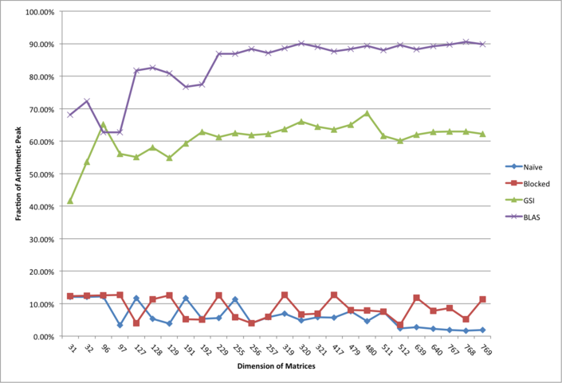

where A, B, and C are n x n matrices. This can be performed using 2_n_3 floating point operations (_n_3 adds, _n_3 multiplies), as in the following pseudocode:
for i = 1 to n
for j = 1 to n
for k = 1 to n
C(i,j) = C(i,j) + A(i,k) * B(k,j)
end
end
end
1.2 Remote XSEDE/Moodle Students: Please Read
Dear Remote Students, we are thrilled to be a part of your parallel computing learning experience and to share these resources with you! To avoid confusion, please note that the assignment instructions, deadlines, and other assignment details posted here were designed for the local UC Berkeley students. You should check with your local instruction team about submission, deadlines, job-running details, etc. and utilize Moodle for questions. With that in mind, the problem statement, source code, and references should still help you get started (just beware of institution-specific instructions). Best of luck and we hope you enjoy the assignment!
1.3 Instructions
You will work in assigned teams (TBA) for this assignment.
Your submission should be a gzipped tar archive, formatted (for Team 4) like: team04_hw1.tgz. It should contain:
dgemm-blocked.c, a C-language source file containing your implementation of the routine: void square_dgemm(int, double, double, double*);
described in pseudocode above. We provide an example dgemm-blocked.c, below.
Makefile, only if you modified it. If you modified it, make sure it still correctly builds the provided benchmark.c, which we will use to grade your submission.
(e.g. for Team 4) team04_hw1.pdf, your write-up.
Please do use these formats and naming conventions. Not following these instructions leads to more busy work for the GSI’s, which makes the GSI’s sad…
This link tells you how to use tar to make a .tgz file.
Submit your .tgz through bCourses.
Your write-up should contain:
the names of the people in your group (and each member’s contribution),
the optimizations used or attempted,
the results of those optimizations,
the reason for any odd behavior (e.g., dips) in performance, and
how the performance changed when running your optimized code on a different machine.
For the last requirement, you may run your implementation on another NERSC machine, on your laptop/cellphone, etc.
Please carefully read the notes for implementation details. Stay tuned to Piazza (signup) for updates and clarifications, as well as discussion.
If you are new to optimizing numerical codes, we recommend reading the papers in the references section.
1.3.1 Notes:
Your grade will mostly depend on two factors:
performance sustained by your codes on Edison,
explanations of the performance features you observed (including what didn’t work)
There are other formulations of matmul (e.g., Strassen) that are mathematically equivalent, but perform asymptotically fewer computations - we will not grade submissions that do fewer computations than the two _n _cubed algorithm. This is actually an optional part of HW1.
Your code must use double-precision to represent real numbers. A common reference for double-precision matrix multiplication is the dgemm (double-precision general matrix-matrix multiply) routine in the level-3 BLAS. We will compare your implementation with the tuned dgemm implementation in the vendor-provided BLAS library - on Edison (Cray XC30), we will compare with the Cray LibSci implementation of dgemm. Note that dgemm has a more general interface than square_dgemm - an optional part of HW1 encourages you to explore this richer tuning space.
You may use any compiler available. We recommend starting with the GNU C compiler (gcc). If you use a compiler other than gcc, you will have to change the provided Makefile, which uses gcc-specific flags. Note that the default compilers, every time you open a new terminal, are PGI - you will have to type “module swap PrgEnv-pgi PrgEnv-gnu” to switch to, eg, GNU compilers. You can type “module list” to see which compiler wrapper you have loaded.
Besides compiler intrinsic functions and built-ins, your code (dgemm-blocked.c) must only call into the C standard library.
You may not use compiler flags that automatically detect dgemm kernels and replace them with BLAS calls, i.e. Intel’s -matmul flag.
You should try to use your compiler’s automatic vectorizer before manually vectorizing.
GNU C provides many extensions, which include intrinsics for vector (SIMD) instructions and data alignment. (Other compilers may have different interfaces.)
Ideally your compiler injects the appropriate intrinsics into your code automatically (eg, automatic vectorization and/or automatic data alignment). gcc’s auto-vectorizer reports diagnostics that may help you identify if manual vectorization is required.
To manually vectorize, you must add compiler intrinsics to your code.
Consult your compiler’s documentation.
You may assume that A and B do not alias C; however, A and B may alias each other. It is semantically correct to qualify C (the last argument to square_dgemm) with the C99 restrict keyword. There is a lot online about restrict and pointer-aliasing - this is a good article to start with.
The matrices are all stored in column-major order, i.e. Ci,j == C(i,j) == C[(i-1)+(j-1)*n], for i=1:n, where n is the number of rows in C. Note that we use 1-based indexing when using mathematical symbols and MATLAB index notation (parentheses), and 0-based indexing when using C index notation (square brackets).
We will check correctness by the following componentwise error bound: |square_dgemm(n,A,B,0) - AB| < epsn|A||B|.
The target processor is a 12-core Intel Ivy Bridge running at 2.4 GHz, yielding 4 double-precision (ie, 64-bit) flops per pipeline * 2 pipelines * 2.4 GHz = 19.2 Gflops/s.

1.3.2 Optional:
These parts are not graded. You should be satisfied with your square_dgemm results and write-up before beginning an optional part.
Implement Strassen matmul. Consider switching over to the three-nested-loops algorithm when the recursive subproblems are small enough.
Support the dgemm interface (ie, rectangular matrices, transposing, scalar multiples).
Try float (single-precision). This means you can use 8-way SIMD parallelism on Edison.
Try complex numbers (single- and double-precision) - note that complex numbers are part of C99 and supported in gcc. This forum thread gives advice on vectorizing complex multiplication with the conventional approach - but note that there are other algorithms for this operation.
Optimize your matmul for the case when the inputs are symmetric. Consider conventional and packed symmetric storage.
Try optimizing matrix multiply for the Cori Intel Xeon Phi Nodes (the newest addition to NERSC). The difference in architectures may make it very interesting for you. You will need to write your own job scripts etc. A good place to start is the Getting Started page. To add some incentive, we are offering extra credit for this optional part this year.
1.4 Source Files
We provide two simple implementations for you to start with: a naive three-loop implementation similar to the pseudocode above, and a more cache-efficient blocked implementation.
The necessary files are in cs267_hw1_2017.tar posted for local students on bCourses. (Remote students, please check with your instructors and instruction site.) Included in the tar are the following:
dgemm-naive.c
A naive implementation of matrix multiply using three nested loops,
dgemm-blocked.c
A simple blocked implementation of matrix multiply,
dgemm-blas.c
A wrapper for the vendor’s optimized BLAS implementation of matrix multiply (default: Cray LibSci),
benchmark.c
The driver program that measures the runtime and verifies the correctness by comparing with the vendor’s implementation,
Makefile
A simple makefile to build the executables,
job-blas, job-blocked, job-naive
Example scripts*** **to run the executables on Edison compute nodes. For example, you can type “sbatch job-blas” to benchmark the BLAS version.
The documentation for Edison’s programming environment can be found below.
1.4.1 Documentation:
You are also welcome to learn from the source code of state-of-art BLAS implementations such as GotoBLAS and ATLAS. However, you should not reuse those codes in your submission.
1.5 Getting Running
Edison works with a batch submission system. Most of you have probably never worked with such a system, so welcome to the wonderful new world. The code you download should work out of the box. Below is an example of how you use batch submission. However, the NERSC documentation is great and is your friend. Once you work through this example, we strongly recommend you get more detail from NERSC. They have a nice example of submitting your first job that you should also work through. Details on how to modify the batch scripts can be found here.
SSH into edison and “wget” the above tarball of source code into some directory. “cd” into that directory and untar the source.
`` ``ssh -l edison.nersc.gov wget --no-check-certificate https://people.eecs.berkeley.edu/~qijing.huang/cs267_2017/hw1/cs267_hw1_2017.tar tar xvf cs267_hw1_2017.tar
Compile the code with the makefile that we give you by typing “make” in the directory. This yields binaries that the computer can execute.
Note that because we are writing sequential code for this assignment, the code will run on the login nodes (the node that you ssh into). You can run the naive code by typing “./benchmark-naive”. Note that while this is feasible, running code on the login nodes is highly frowned upon and if you abuse it NERSC will get in touch with you. We also will not test your code on the login nodes, so you want to be benchmarking things on the compute nodes.
To submit a job to be processed on the compute nodes, you need to submit a batch job script. These are easy to write, but we gave you one anyway *****, because we like you. To submit your job, you must choose a queue. There is more information online, but we’ll test your code on the regular queue and you can debug in the debug queue. We chose the debug queue for you in the batch job script we give you, but use the regular queue to get real data for your final report. Submit the job-naive file with “sbatch job-blas”. This will spit out something like “Submitted batch job JOBID” where JOBID is the id of your job.
You can check on how your job is doing by querying the system with “squeue -u MYUSERNAME”. That will spit out some status while you impatiently wait for your job to finish (it’s so exciting!).
When your job finishes running on a compute node, it will write an output (standard out) file and a error file (standard error). It’s all very cool
Note - lots of scientists all over are using the computers, so don’t do bad things like run lots of code on the login nodes or query squeue constantly. This slows things down for other people and NERSC will get mad at you, which will make it hard for you to do your homework.
Finally, please bring questions to office hours! We want you spending time on learning how to optimize code and understand the hardware.
1.5.1 Important:
This documentation has been updated to reflect recent changes in the NERSC batching system. We have done our best to update all references, but beware artifacts may exist in outside sources and even these documents. Specifically, if you come across “qsub” instructions in NERSC-related resources, follow instead the “sbatch” instructions current on the NERSC site. If you are confused, please email us or stop by our office hours.
***** We emphasize these are example scripts because for these as well as all other assignment scripts we provide, you may need to adjust the number of requested nodes and cores and amount of time according to your needs (your allocation and the total class allocation is limited). To understand how you are charged, READ THIS alongside the given scripts. For testing (1) try running and debugging on your laptop first, (2) try running with the minimum resources you need for testing and debugging, (3) once your code is fully debugged, use the amount of resources you need to collect the final results for the assignment. This will become more important for later assignments, but it is good to get in the habit now.
1.6 References
Goto, K., and van de Geijn, R. A. 2008. Anatomy of High-Performance Matrix Multiplication, ACM Transactions on Mathematical Software 34, 3, Article 12.
(Note: explains the design decisions for the GotoBLAS dgemm implementation, which also apply to your code.)
(Note: how to write C code for modern compilers and memory hierarchies, so that it runs fast. Recommended reading, especially for newcomers to code optimization.)
(Note: PHiPAC is a code-generating autotuner for matmul that started as a submission for this HW in a previous semester of CS267. Also see ATLAS; both are good examples if you are considering code generation strategies.)
Lam, M. S., Rothberg, E. E, and Wolf, M. E. 1991. The Cache Performance and Optimization of Blocked Algorithms, ASPLOS’91, 63-74.
(Note: clearly explains cache blocking, supported by with performance models.)